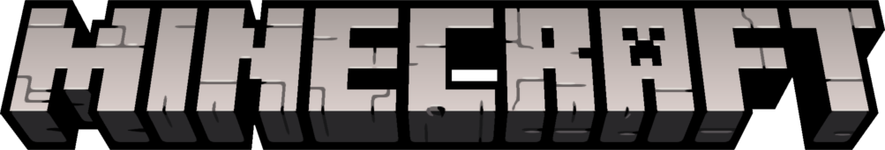
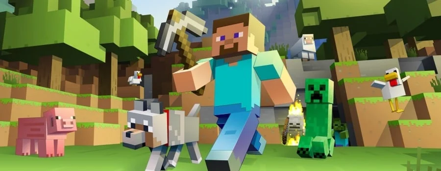
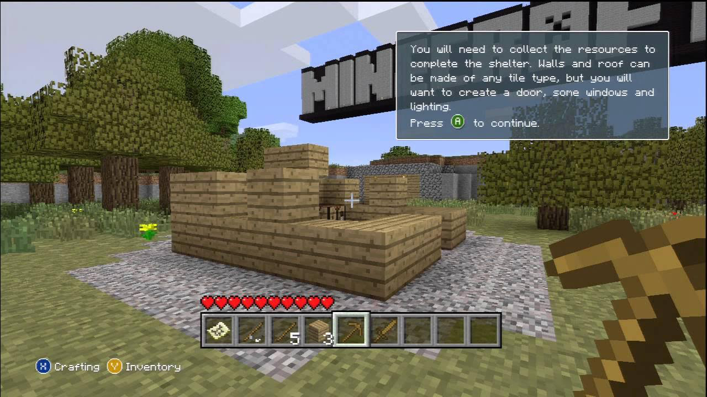
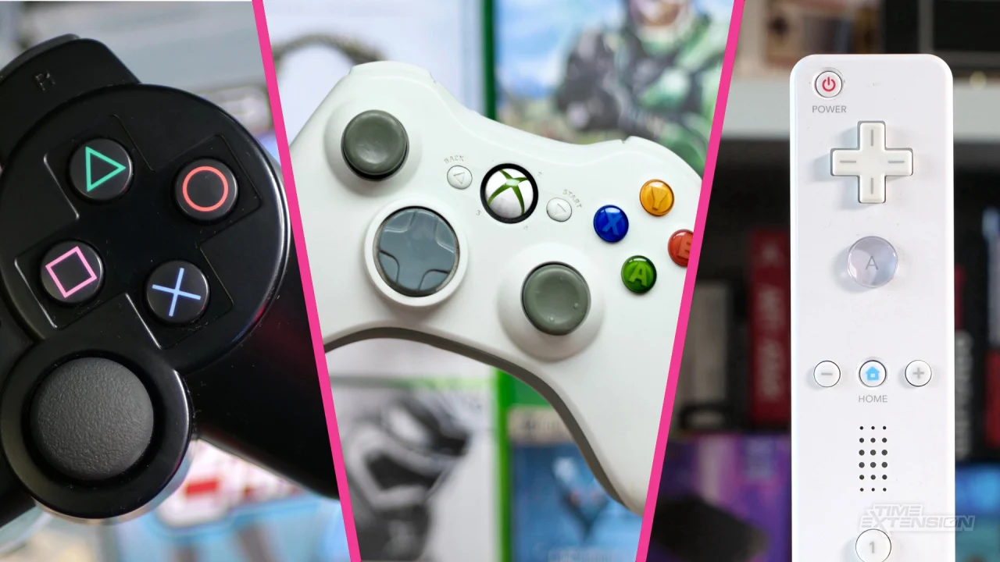

The biggest Game in History websitey
Minecraft is the most popular video game of all time and has survived for over 15 years and counting. This game has continued to captivate players. Originally a PC game, Minecraft has been ported to numerous platforms, now available on nearly every device imaginable. From handheld consoles to stationary systems, countless machines have hosted this iconic game. But today, we’re focusing on one particular version. The version is now referred to as Minecraft Console Edition.

Minecraft on Consoles. A completely new Concept
People were unsure if this so-called "lite" version of Minecraft would be a success or a
total
flop. Initially, things didn’t look promising. The console version was based on an older
build
of the game and lacked key features, like infinite worlds and online multiplayer. If your
world
didn’t have a woodland mansion or ocean ruins, there was no way of getting cross-platform
play
or online multiplayer at the time. Yet, despite these limitations, no one could have
predicted
how much passion and love the console edition would get over the next few years.

Divide and Conquer
The creator of Minecraft, Notch originally stated that Minecraft was only being released on the Xbox 360. However, it soon became clear that this game was far too big to stay contained on one console. Later the game was ported to PS3, PSVita/PS TV, and WiiU. Nintendo Switch, Xbox One, and PS4 did get their versions too, however, these were discontinued and instead replaced with Bedrock Edition.

Quality or Quantity? Why not Both?
Developed and updated by 4J Studios, a third-party game development studio known for their expertise, this version introduced many features not found in any other Minecraft version. Key additions included tutorial worlds, Mini Games, and an extensive skin library. 4J Studios knew how to improve the game, and they eventually introduced online multiplayer, allowing up to 8 players to cplay online. A major milestone for the console edition.